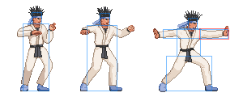
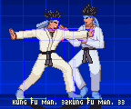
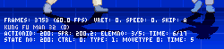

M.U.G.E.N, Elecbyte (c)1999-2009
Updated 17 September 2009
Now that you're familiar with sprites and animations, it's time to move on to the core part of your character, the states. Exactly what you character does is described in its .cns file. It's a good idea to browse at least the first few parts of the CNS docs before continuing with this tutorial.
Let's begin by opening up your player's .cns file in a text editor (back in Tutorial 1, you should have copied kfm.cns to player.cns, or whatever name you chose for your character). At the top of the .cns file you'll see the [Data] group. This is where the player variables begin.
The player variables affect a lot of basic aspects of your character. Most of the values in kfm.cns will work fine for almost any character, but there are a few you may need to change. These are marked below. Keep in mind that the coordinate system is positive X for forward (in the direction your character is facing), and negative Y for upwards. All distances are measured in pixels, and velocities in pixels/tick (one game tick is 1/60th of a second).
; There isn't anything in the Data group you need to change at this point
; in the tutorial. You can leave this group unchanged for now.
[Data]
life = 1000
attack = 100
defence = 100
fall.defence_up = 50
liedown.time = 60
airjuggle = 15
sparkno = 2
guard.sparkno = 40
KO.echo = 0
volume = 0
IntPersistIndex = 60
FloatPersistIndex = 40
; There are some things in this group that you may want to change.
[Size]
; The next two parameters are the X and Y scale factors of your character's
; sprites. You can leave them at 1 each to keep your sprites at a normal
; size.
xscale = 1
yscale = 1
; Make sure you adjust the width settings below to suit your character.
; These affect how close another character can get to yours. Adjust these
; values and press Ctrl-C in-game. Look at the bar the feet of the
; characters.
ground.back = 15 ;Player width (back, ground)
ground.front = 16 ;Player width (front, ground)
air.back = 12 ;Player width (back, air)
air.front = 12 ;Player width (front, air)
; This is generally fine at 60. Don't make it too big, or other
; characters will have trouble jumping over yours.
height = 60 ;Height of player (for opponent to jump over)
; You can leave the next 3 unchanged.
attack.dist = 160
proj.attack.dist = 90
proj.doscale = 0
; You can set these accordingly if your character is tall or short.
; Otherwise, these default values should be fine.
head.pos = -5, -90 ;Approximate position of head
mid.pos = -5, -60 ;Approximate position of midsection
; The next 2 parameters don't need to be changed.
shadowoffset = 0
draw.offset = 0,0
; These are the velocities used in various common states that all
; characters have. Adjust these to suit your character.
[Velocity]
walk.fwd = 2.4 ;Walk forward
walk.back = -2.2 ;Walk backward
run.fwd = 4.6, 0 ;Run forward (x, y) (y should be 0)
run.back = -4.5,-3.8 ;Hop backward (x, y)
jump.neu = 0,-8.4 ;Neutral jumping velocity (x, y)
jump.back = -2.55 ;Jump back Speed (x, y)
jump.fwd = 2.5 ;Jump forward Speed (x, y)
runjump.back = -2.55,-8.1 ;Running jump speeds (opt)
runjump.fwd = 4,-8.1 ;.
airjump.neu = 0,-8.1 ;.
airjump.back = -2.55 ;Air jump speeds (opt)
airjump.fwd = 2.5 ;.
; These are miscellaneous variables used for movement. Set
; accordingly.
[Movement]
airjump.num = 1 ;Number of air jumps allowed (opt)
airjump.height = 35 ;Minimum distance from ground before you
;can air jump (opt)
yaccel = .44 ;Vertical acceleration
stand.friction = .85 ;Friction coefficient when standing
crouch.friction = .82 ;Friction coefficient when crouching
|
Once you have the variables set up to your liking, we'll move on to making a simple attack.
If your character's .cns file (we'll call it player.cns) was copied from kfm.cns, then your character already has all of Kung Fu Man's states. What we are going to do is modify KFM's standing punch to work for your character. Don't worry about all the other states for now. You can modify them later, or delete the ones you don't need.
KFM's standing light punch is state number 200, so we'll be working with sprites with group number 200, and one animation action with the same number.
The first step is to make the sprites and animation action for the attack. For this example, let's assume you added 3 new sprites and rebuilt the .sff file. In player.air, make a new animation action 200. If your .air file was copied from kfm.air, then replace the old action 200 with the new one. What you have added will look something similar to this:
;New attack [Begin Action 200] 200,0, 0,0, 2 200,1, 0,0, 3 200,2, 0,0, 5 200,1, 0,0, 4 200,0, 0,0, 3 |
As you did in Tutorial 2, define collision boxes for this animation. For the animation frame that will deal the hit, be sure to define an Clsn1 (attack, red) box as well. In general, it's a good idea to have your Clsn2 (hit, blue) boxes cover the area inside your Clsn1 boxes. The reason is because if you're missing blue boxes inside the red ones, your attack gets an unfair priority. Also, you wouldn't be able trade hits with another player trying to hit you in that area.
Here is an example:
After you save your collision boxes to the .air file, open up player.cns (or whatever you named your character's .cns file). Find the group [Statedef 200], and delete everything from that line to just before [Statedef 210], the next state. You've now removed KFM's light punch attack state.
Now let's put in your own attack state. We'll start slow, and build up. Put this block of code into player.cns:
; Every state must begin with a StateDef group. Right now, we have one ; parameter in the StateDef, the "anim" parameter. This signals M.U.G.E.N to ; change the player to animation action 200 at the start of the state. [StateDef 200] anim = 200 ; This next group is called a controller. Besides the StateDef, a state is ; made up of one or more controllers. Controllers are instructions on what ; to do at what times. "What to do" is the "type" of the controller, and ; "at what times" is called the "trigger condition". In this case, the ; trigger is "AnimTime = 0". This means "when the current animation action ; has ended". The type is "ChangeState", with a value of 0. So this whole ; controller means "change back to state 0 (standing state) when the ; current animation action has ended". [State 200, 1] type = ChangeState trigger1 = AnimTime = 0 value = 0 |
At this time, you might want to refer back to the cns documentation Learning M.U.G.E.N's CNS format can be a little difficult at first, so don't worry if you find yourself confused once in a while. Like any other scripting language, you'll get used to the CNS format once you've seen enough of it.
Okay, so what does that block of code do? It basically changes the player to anim action 200, waits until the action ends, then sets the player back to state 0, the normal standing state. Try running it and see. When you're standing, press button x to go into state 200.
You might have noticed some things when you tried the attack. Even though you have Clsn1 boxes, you can't hit the other player! That's because we haven't defined the hit parameters yet. We'll get to that later. For now, we'll take care of the other issues one by one.
|
 |
| The attack doesn't hit! |
The first thing to do is to prevent the player from doing anything to break out of the attack. To see what I mean, press X and then quickly try walking or jumping. This isn't correct behavior for an attack, so let's prevent that. Insert a new line "ctrl = 0" to the StateDef group:
[StateDef 200] anim = 200 ctrl = 0 ;*** Add this line *** [State 200, 1] type = ChangeState trigger1 = AnimTime = 0 value = 0 |
I'll explain the concept of what's called the control flag. A flag can have either an on (also called True) or off (False) value. Now, when the control flag is on, we say, "the player has control". A player that has control can immediately start walking, jumping, attacking, etc, if you press the corresponding buttons. If that player doesn't have control, you can't make him move or attack until he gets control back.
Earlier on, you could cancel the attack at any time because your player had control the whole time. Now that we added the line ctrl = 0" to the StateDef, you can't break out of the attack anymore. Now try running M.U.G.E.N again with your modified player. You can't cancel the attack now, but you've gotten stuck in the stand state and can't move! What's happened?
Let's take a look at the debug information at the bottom of the screen. If you don't see it, press Ctrl-D to turn it on.
|
 |
| Player debug information |
I'll explain what you see row by row.
That's a lot of information! No need to worry. Right now we only want to look at the value of control flag. Look for it on the bottom row after you've done the attack. Do you see that the value stayed at 0 even though you changed back to the stand state? We'd better fix that.
[StateDef 200] anim = 200 ctrl = 0 [State 200, 1] type = ChangeState trigger1 = AnimTime = 0 value = 0 ctrl = 1 ;*** Add this line *** |
What that line does is turn on the control flag just as your player changes back to the stand state. Try running M.U.G.E.N again. Now he's not stuck anymore!
There's still another problem. If you hold forward or backwards when you attack, you'll see your character sliding along during the attack. Let's add some new parameters to the StateDef:
[StateDef 200] anim = 200 ctrl = 0 type = S ;*** Add this line *** physics = S ;*** Add this line *** [State 200, 1] type = ChangeState trigger1 = AnimTime = 0 value = 0 ctrl = 1 |
These two parameters tell M.U.G.E.N to set your player to a "standing" state type, and to use "standing" physics. When your character has "standing" physics, he will be subject to the friction with the ground (you specified the "stand.friction" parameter in the player variables part of this tutorial earlier). Without the parameter, no physics model would be used, so your character would slide along as if he was on ice (as you saw just now).
If you try running M.U.G.E.N now, your character should slow to a stop quite quickly if you attack while walking. That's an improvement, but let's add one more parameter to make him stop moving immediately when you attack.
[StateDef 200] anim = 200 ctrl = 0 type = S physics = S velset = 0,0 ;*** Add this line *** [State 200, 1] type = ChangeState trigger1 = AnimTime = 0 value = 0 ctrl = 1 |
The "velset = 0,0" line tell M.U.G.E.N to set your character's velocity to 0 (in both the X and Y direction) as he enters state 200. If you try running M.U.G.E.N now, you'll see your character standing firmly when you attack, no matter how fast he was moving before.
That was quite a lesson! Now all that's left is making your attack state actually hit. Let's move on to Tutorial 4 to learn how to do that.
Next is Tutorial Part 4